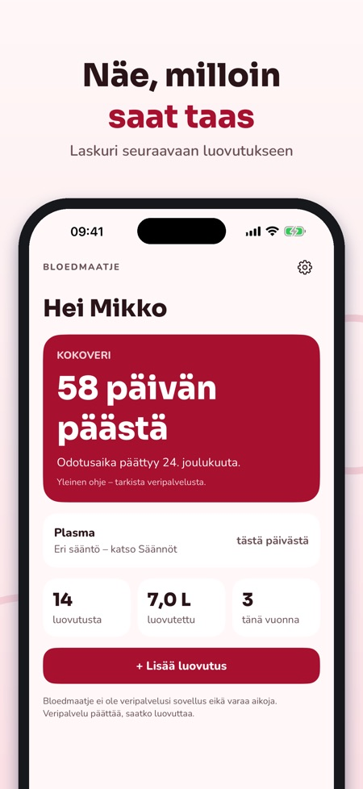
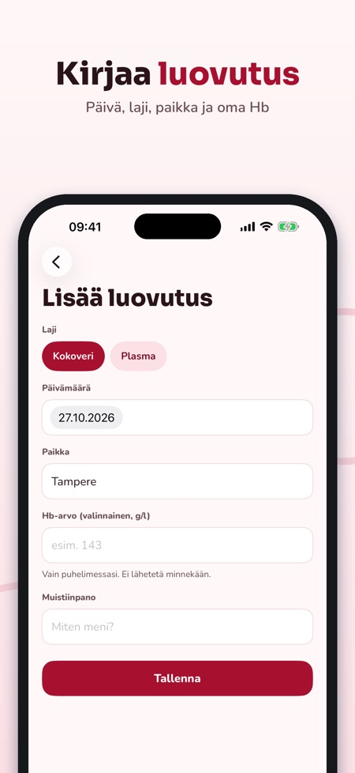
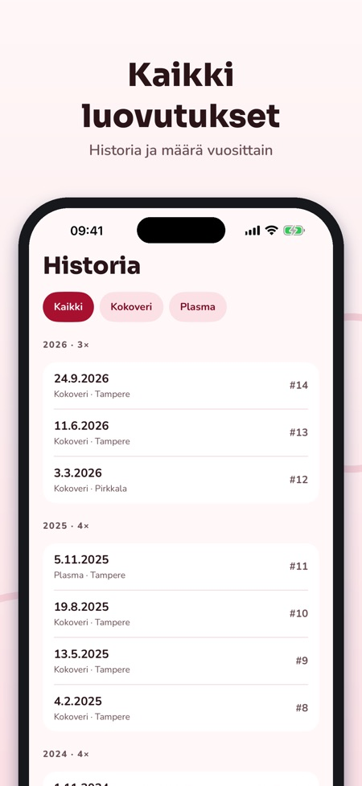

Seuraa luovutuksiasi.



Bloedmaatje pitää kirjaa luovutuksistasi ja näyttää, milloin voit luovuttaa verta taas.
Kirjaus, lähtölaskenta, muistutus, historia ja virstanpylväät ovat käytettävissä ilman ostoa. Bloedmaatje Plus on kertaosto widgetille, tilastoille ja Hb-lokille. Ei tilausta.
Bloedmaatje ei anna lääketieteellisiä neuvoja eikä päätä, saatko luovuttaa; sen päättää veripalvelu. Sovellus on itsenäinen, ei liity mihinkään veripalveluun eikä varaa aikoja. Hb-arvosi pysyvät puhelimessa.